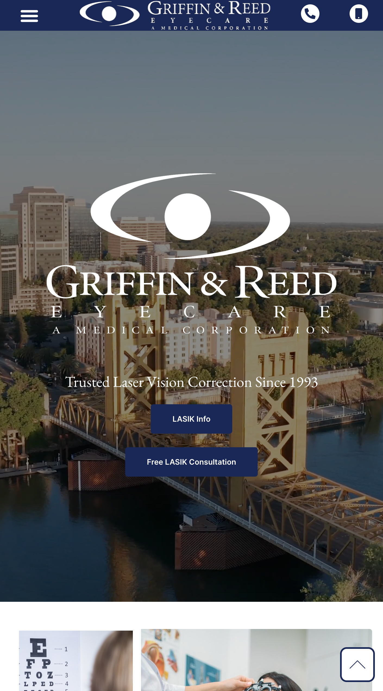
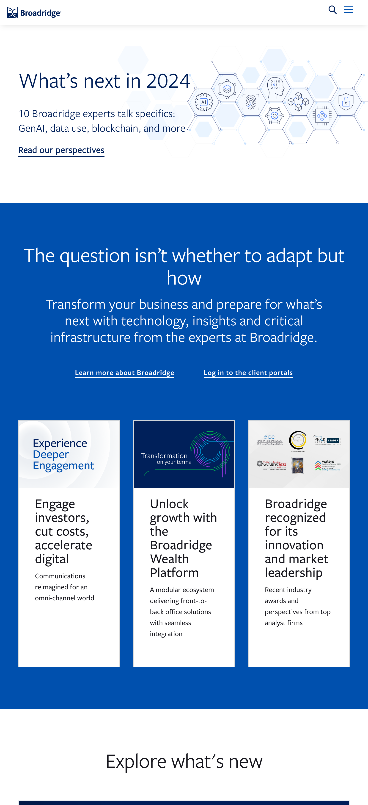
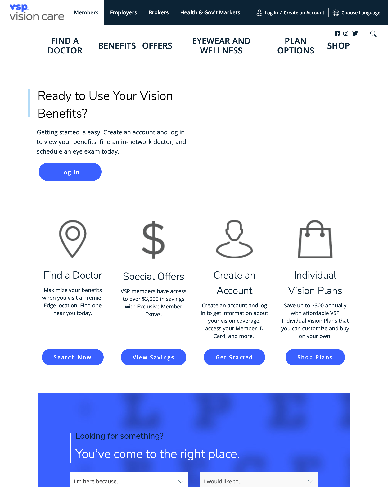

Visual Hierarchy
Griffin and Reed Eyecare
Griffin and Reed Eyecare When viewing this site's homepage, the eye is drawn to most important part, the business logo and name Griffin & Reed. The eye in then drawn down to the business descriptin by the use of smaller font. Finally the eye is drawn down to the links to obtain more information.
Rule of Thirds
Broadridge
Broadridge The rule of thirds is used on this page to draw attention to the what the company feels is key areas a potential client would want to know more about. Using this rule they are able to focus on various aspects of their busiess allowing the site reader to click on each link to learn more.
White Space and Clean Design
VSP
VSP Vision Care I feel this site is a great example of using white space and clean design. It allows the reader to quickly scan the page to locate what they want to find or learn. The eye is able to quickly glance and can see exactly where they need to click without having to do much searching.